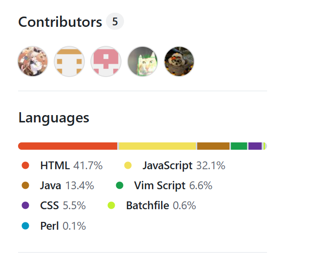

Step into the Infinite
Entrar no infinito
Everything is possible
Tudo é possível
Journey into the Azure
Rumo às profundezas do azul

NeonAngelThreads
Azure Explorer
Exploring the unknown blue, weaving dreams through code.

QianLi071
Logic Weaver
Weaving logic through code, crossing the peak of algorithms.

SHENQUE520
Void Architect
Building order in the void, searching for truth in code.

Yolanda9085
Canvas Master
Everything above the canvas is a world, everything below is a soul.

WYK300
Pixel Wizard
Pixels are small, but can hold the universe; code is invisible, but has power.

Star Me